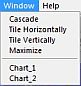

Venster menu
 Het plaatje menu_window.jpg is verouderd. Dit vormt geen probleem voor de bruikbaarheid van dit document
Het plaatje menu_window.jpg is verouderd. Dit vormt geen probleem voor de bruikbaarheid van dit document

Mogelijkheden om de positie en gedrag te bepalen van kaarten binnen het programmavenster.
{kind=link}
Koppel - ontkoppel alle kaarten
Via het menu: Venster → Koppel/ontkoppel alle kaarten
Je kunt verschillende kaarten tegelijk open hebben met verschillende ingestelde beeldvelden, rotaties en coördinatensystemen. Als je de kaarten met elkaar koppelt, dan nemen alle kaarten de coördinaten over van het centrum van de actieve kaart. Wanneer de kaarten gekoppeld zijn, zal iedere verandering van de centrale positie in de actieve kaart door de andere kaarten overgenomen worden. Je kunt van de individuele kaarten nog steeds het beeldveld en de oriëntatie wijzigen zonder dat dat gevolgen heeft voor de andere kaarten.
De snelle manier om kaarten te koppelen is door een klik op het  icoontje in de koppel groep in de objectenbalk.
icoontje in de koppel groep in de objectenbalk.
Centreer en houd ... vast
Via het menu: Venster → Centreer en houd … vast
De kaart kan een geselecteerd object continu in het centrum afbeelden. Het spreekt voor zich dat je eerst een object moet selecteren, vervolgens klik je via het menu op deze regel.
Het heeft alleen maar zin om een object op deze manier vast te houden wanneer je de kaart in het Alt-Az coördinatensysteem gebruikt terwijl je een vinkje hebt staan in de checkbox ''Verniew automatisch iedere'' van het Datum / Tijd dialoogvenster. Als aan deze voorwaarden niet is voldaan, dan bewogen je kaarten toch al niet.
De snelle manier om een object vast te houden is een klik op het  icoontje van de koppel groep in de objectenbalk. Je kunt ook het object vasthouden door een rechter muisklik op het object, gevolgd door een klik in het pop-up venster op Centreer en houd ... vast.
icoontje van de koppel groep in de objectenbalk. Je kunt ook het object vasthouden door een rechter muisklik op het object, gevolgd door een klik in het pop-up venster op Centreer en houd ... vast.
Cascade
Via het menu: Venster → Cascade
Als je hierop klikt zal het programma de kaarten herschikken als een onderling verschoven stapel.
De snelle manier is een klik op het  icoontje in de venster groep A iconen van de hoofdbalk.
icoontje in de venster groep A iconen van de hoofdbalk.
Herschik horizontaal
Via het menu: Venster → Herschik horizontaal
Door hierop te klikken zal het programma de kaarten in de breedte uitvullen en boven elkaar plaatsen.
Er is geen icoontje om dit te doen.
Herschik verticaal
Via het menu: Venster → Herschik verticaal
Door een klik hierop zal het programma de kaarten in de hoogte uitvullen en naast elkaar plaatsen.
De snelle methode voor deze actie is een klik op het  icoontje in de venster groep A iconen op de hoofdbalk.
icoontje in de venster groep A iconen op de hoofdbalk.
Maximaliseer
Via het menu: Venster → Maximaliseer
Door een klik op deze regel zal de actieve kaart het hele programmavenster vullen. Dit is het tegengestelde van herstel afmetingen.
Deze actie is hetzelfde als wanneer je het zwarte vierkant-icoontje klikt aan de rechter bovenkant van een niet-gemaximaliseerde kaart.
Kaartenlijst
Via het menu: Venster → [Kaart_#]
Het programma toont je een lijst van geopende kaarten onderin dit menu. Door op de corresponderende regel te klikken, maak je deze kaart tot de “actieve kaart”. Het programma zet deze op de voorgrond.